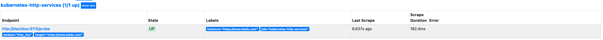

prometheus 域名状态码监控
一、安装 blackbox
1.1 二进制安装
是 Prometheus 社区提供的官方黑盒监控解决方案，其允许用户通过：HTTP、 HTTPS、 DNS、 TCP 以及 ICMP 的方式对网络进行探测
👉🏻 blackbox 下载地址
执行以下命令，下载并安装blackbox
# 下载二进制文件
wget https://github.com/prometheus/blackbox_exporter/releases/download/v0.24.0/blackbox_exporter-0.24.0.linux-amd64.tar.gz
# 解压二进制文件
tar -zxvf blackbox_exporter-0.24.0.linux-amd64.tar.gz -C /opt/
# 重命名
mv blackbox_exporter-0.24.0.linux-amd64 blackbox_exporter
解压后的文件结构如下
├── blackbox_exporter # 二进制文件
├── blackbox.yml # 配置文件
├── LICENSE
└── NOTICE
配置文件可使用如下配置
modules:
http_2xx: # http 检测模块 Blockbox-Exporter 中所有的探针均是以 Module 的信息进行配置
prober: http
timeout: 10s
http:
valid_http_versions: ['HTTP/1.1', 'HTTP/2']
valid_status_codes: [200] # 这里最好作一个返回状态码，在grafana作图时，有明示---陈刚注释。
method: GET
preferred_ip_protocol: 'ip4'
http_post_2xx: # http post 监测模块
prober: http
timeout: 10s
http:
valid_http_versions: ['HTTP/1.1', 'HTTP/2']
method: POST
preferred_ip_protocol: 'ip4'
tcp_connect: # TCP 检测模块
prober: tcp
timeout: 10s
dns: # DNS 检测模块
prober: dns
dns:
transport_protocol: 'tcp' # 默认是 udp
preferred_ip_protocol: 'ip4' # 默认是 ip6
query_name: 'kubernetes.default.svc.cluster.local'
启动blackbox_exporter
./blackbox_exporter --config=blackbox.yml
1.2 k8s 安装
准备安装文件 blackbox_app.yaml
apiVersion: v1
kind: ConfigMap
metadata:
name: blackbox-config
namespace: kube-prometheus
data:
blackbox.yml: |-
modules:
http_2xx: # http 检测模块 Blockbox-Exporter 中所有的探针均是以 Module 的信息进行配置
prober: http
timeout: 10s
http:
valid_http_versions: ["HTTP/1.1", "HTTP/2"]
valid_status_codes: [200]
method: GET
preferred_ip_protocol: "ip4"
http_post_2xx: # http post 监测模块
prober: http
timeout: 10s
http:
valid_http_versions: ["HTTP/1.1", "HTTP/2"]
method: POST
preferred_ip_protocol: "ip4"
tcp_connect: # TCP 检测模块
prober: tcp
timeout: 10s
dns: # DNS 检测模块
prober: dns
dns:
transport_protocol: "tcp" # 默认是 udp
preferred_ip_protocol: "ip4" # 默认是 ip6
query_name: "kubernetes.default.svc.cluster.local"
---
apiVersion: apps/v1
kind: Deployment
metadata:
name: blackbox
namespace: kube-prometheus
spec:
selector:
matchLabels:
app: blackbox
template:
metadata:
labels:
app: blackbox
spec:
containers:
- image: prom/blackbox-exporter:v0.16.0
name: blackbox
args:
- --config.file=/etc/blackbox_exporter/blackbox.yml # ConfigMap 中的配置文件
- --log.level=error # 错误级别控制
ports:
- containerPort: 9115
volumeMounts:
- name: config
mountPath: /etc/blackbox_exporter
volumes:
- name: config
configMap:
name: blackbox-config
---
apiVersion: v1
kind: Service
metadata:
name: blackbox
namespace: kube-prometheus
spec:
selector:
app: blackbox
ports:
- port: 9115
targetPort: 9115
执行一下命令，进行安装
kubectl apply -f blackbox_app.yaml
输出如下
configmap/blackbox-config created
deployment.apps/blackbox created
service/blackbox created
二、配置 prometheus
在prometheus中配置blackbox抓取配置
apiVersion: v1
kind: ConfigMap
metadata:
name: prometheus-config
namespace: kube-prometheus
data:
prometheus.yml: |
global:
scrape_interval: 15s
scrape_timeout: 15s
scrape_configs:
- job_name: 'prometheus'
static_configs:
- targets: ['localhost:9090']
# 配置http模块,没有采用参考文档，因为检测的是外部域名
- job_name: 'kubernetes-http-services'
metrics_path: /probe
params:
module: [http_2xx] # 使用定义的http模块
relabel_configs:
- source_labels: [__address__]
target_label: __param_target
- source_labels: [__param_target]
target_label: instance
- target_label: __address__
replacement: blackbox:9115 # 这里的9115是Exporter的默认端口
首先获取 targets 实例的 __address__值写进__param_target，__param_<name>形式的标签里的 name 和它的值会被添加到发送到黑盒的 http 的 header 的 params 当作键值，例如__param_module对应 params 里的 module。
然后获取__param_target的值，并覆写到 instance 标签中，覆写 Target 实例的 __address__ 标签值为 BlockBoxExporter 实例的访问地址，向 blackbox:9115 发送请求获取实例的 metrics 信息。
然后更新配置：
kubectl apply -f prometheus-cm.yaml
输出如下
configmap/prometheus-config configured
重新加载配置
# 这里配置了域名解析
curl -X POST http://prometheus.com/-/reload
打开prometheus 找到target，就可以看到上面定义的kubernetes-http-services任务了
service-http

目前还没添加域名，所以为空
要添加监控的域名，就在kubernetes-http-services添加static_configs
kubernetes-http-services配置如下
- job_name: 'kubernetes-http-services'
metrics_path: /probe
params:
module: [http_2xx] # 使用定义的http模块
static_configs:
- targets:
- https://www.baidu.com
relabel_configs:
- source_labels: [__address__]
target_label: __param_target
- source_labels: [__param_target]
target_label: instance
- target_label: __address__
replacement: blackbox:9115 # 这里的9115是Exporter的默认端口
保存后，执行上述更新配置命令和reload命令
然后重新打开promehtues的target,已经注册上去了

三、prom sql
配置prometheus监控告警，检查状态码非200
probe_http_status_code != 200
如果除了200还有其他状态码，如301、424 等，可以用如下sql
probe_http_status_code != 200 unless probe_http_status_code == 424
此prom sql表示，查找状态码非200或者非424的数据
另外一种查询方式是，查询 10 分钟之内，状态码有变化的数据
changes(probe_http_status_code[10m])